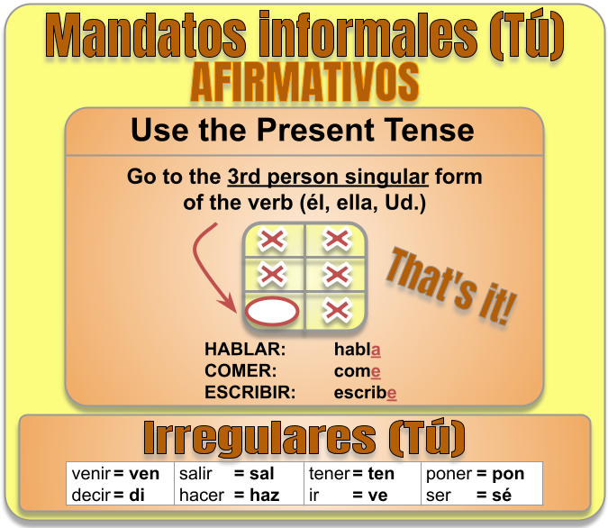
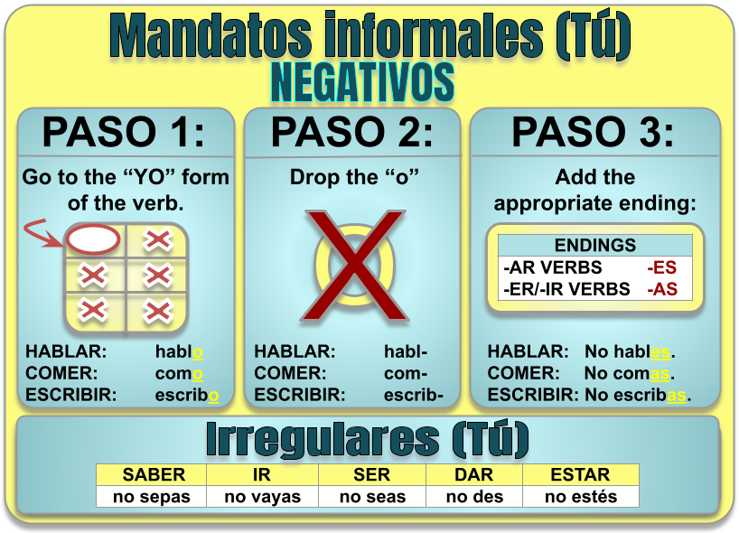
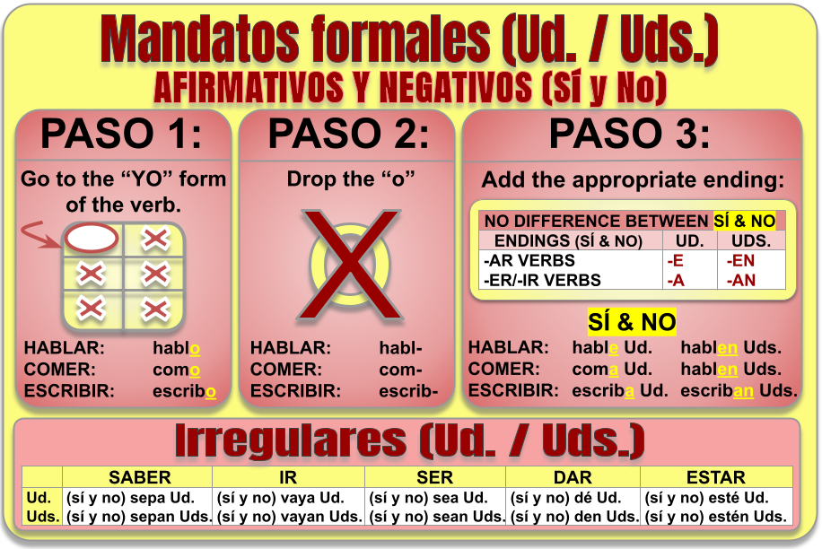

Review How to Form Commands in Spanish
Study the rules below, then go back to practice!
Mandatos informales (Tú) — Afirmativos

Mandatos informales (Tú) — Negativos

Mandatos formales (Ud. / Uds.) — Afirmativos y Negativos

← Back to flashcards